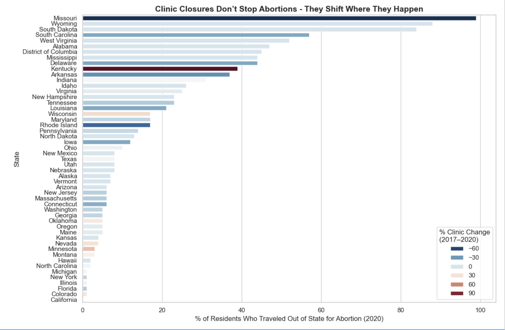
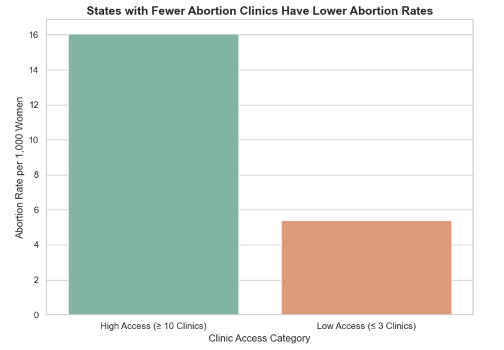

Proposition: Closing Clinics Doesn't End Abortions: It Only Makes Access Harder.
FOR the Proposition

Design Decisions and Rationale:
- Encoding: I used colored bars based on clinic loss percentages to emphasize severity visually. This helps emphasize that even states with high clinic loss still had high abortion travel. This makes the point more persuasive by visually linking closures with resulting travel (+1.5).
- Highlight: I focused the chart on % of residents who traveled out of state this makes the point clear: even when clinics close, abortions don’t stop instead they shift. This decision strengthens the argument by showing continued demand. I chose travel % over raw numbers to make it easier to compare across states with different populations.(+2).
- Ordering: I chose to sort the bars by the percentage of residents who traveled out of state for care. This makes the overall trend easier to see at a glance, especially for the most extreme cases like Wyoming and Missouri. Sorting this way worked better than an alphabetical or random order, which made the story harder to follow (+1.5).
- Framing: The title focuses on continued access despite closures (-0.5).
AGAINST the Proposition

Design Decisions and Rationale:
- Grouping: Created low vs high clinic access groups to simplify the comparison. by defining "low access" as states with ≤3 clinics and "high access" as those with ≥10, the visualization highlights a stark contrast. This made the takeaway more immediate for viewers compared to plotting individual states (+1.5).
- Simplification: Excluded mid-access states (6–9 clinics), simplifying the story. This choice removed noise and made the difference between low and high access states feel more pronounced, but at the cost of hiding more middle ground cases. I made this tradeoff to make the overall message clearer and more persuasive (-1).
- Framing: Title suggests causality between clinic closures and rate drops without stating it explicitly. The language implies a cause-effect relationship, which isn’t directly proven by the data. This framing choice was intentional to make the message stronger, though it risks misleading interpretation (-1).
- Color contrast: Used strong contrasting colors to clearly separate the two groups visually. The color difference draws the eye and hghlights the binary grouping without emotional or biased tones. I considered a gradient scale but decided contrast served the clarity of the message better (0).
Final Reflection
I chose the abortion dataset because it’s an issue that is emotionally charged and politically complex, making it a perfect fit for a project about persuasive and deceptive visualization. Access to abortion services is a pressing topic, and I wanted to explore how visualization design can either highlight the persistence of demand or emphasize barriers to access depending on the framing choices.
During the design process, some steps felt straightforward, like selecting which columns from the dataset directly related to access and rates. However, it was surprisingly difficult to balance showing an honest picture without overcomplicating it or making the visuals overwhelming. Deciding how much to group, what to exclude, and how to word titles made me realize how much framing shapes a reader’s conclusions even when the underlying data is accurate. What surprised me most was how subtle design tweaks like omitting mid-access states or using a strong titles could dramatically alter the message without technically lying.
After this project, I now see “ethical analysis and visualization” as not just about factual correctness but about transparency which means being clear about the choices made, and what is shown versus hidden. I think persuasive design is acceptable when it highlights important patterns, but it crosses into misleading when it intentionally hides major context or suggests causality where there is none. Small shifts in grouping, language, or color can steer interpretation more than I expected, and I now believe ethical visualization means making those design biases visible to the reader whenever possible.